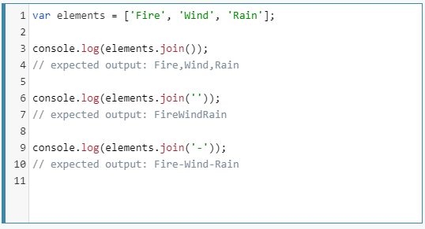

又出現排序了，看來排序真的很重要
這次的特殊排序方法是：去除特定文字後的字母排序。
我們的原始資料1
2
3
4
5
6
7
8
9
10
11
12
13
14
15const bands = [
'The Plot in You',
'The Devil Wears Prada',
'Pierce the Veil',
'Norma Jean',
'The Bled',
'Say Anything',
'The Midway State',
'We Came as Romans',
'Counterparts',
'Oh, Sleeper',
'A Skylit Drive',
'Anywhere But Here',
'An Old Dog'
];
這邊我們透過作者的方法和這篇文章的做法都做一次看看
sort
我們在day4做過一次
最主要的核心就是在排序時去針對a和b兩個值做過濾。1
bands.sort((a,b) => check(a) > check(b) ? 1 : -1 )
※注意這裡的Arrow functions
單一行陳述不需要 {}，如有大括號是需要自行加入 return的
方式一
我們把符合條件的文字都刪除後再傳回新的值去做排序1
2
3
4
5
6
7
8
9
10function check(text){
let temp = text.split(' ')
if(temp[0]==='A'||temp[0]==='The'||temp[0]==='An'){
temp.shift()
let value = temp.join('')
return value
}else{
return text
}
}
我們讓每個text透過split(' ')將每個字串以空白做切割，切成一個個單字的陣列
每個陣列的第一個值temp[0]若為A、The或An，就透過shift()將他移除，最後將剩下的陣列內容(temp)轉回字串並回傳這個值。
簡單來說就是把陣列的中的每個字串抓出來(轉成陣列)刪掉特定文字再(轉回文字)塞回去。
不過這有一個問題是如果遇到小寫就要另外再寫條件比較麻煩。
方式二
作者的原始方法，透過正則表達式去判斷並用空字串取代掉1
2
3function strip(bandName) {
return bandName.replace(/^(a |the |an )/i, '').trim();
}
trim()：刪除空白str.replace(regexp|substr, newSubstr|function)
replace() 方法會傳回一個新字串，此新字串是透過將原字串與 pattern 比對，以 replacement 取代吻合處而生成。pattern 可以是字串或 RegExp，而 replacement 可以是字串或函式（會在每一次匹配時被呼叫）。
補充正則表達式:
圖片來源:梅問題教學網
關於 /^(a |the |an )/i ：
最後的i指的是比對的方式(flag)
- g：全域比對（Global match）
- i：忽略大小寫（Ignore case）
- gi：全域比對並忽略大小寫
正則表達式內容太多了這邊無法完全筆記，這邊記錄一些還不錯的幾篇介紹資料：
程式碼
總之，這兩種方法都是透過先處理原始的資料再去排序
最後透過map將資料轉化成html回傳渲染到畫面上即可1
2
3
4
5
6
7
8
9
10
11
12
13
14
15
16
17
18function check(text){
//方法一
let temp = text.split(' ')
if(temp[0]==='A'||temp[0]==='The'||temp[0]==='An'){
temp.shift()
let value = temp.join('')
return value
}else{
return text
}
//方法二
//return text.replace(/^(a |the |an )/i, '').trim();
}
bands.sort((a,b) => check(a) > check(b) ? 1 : -1 )
document.querySelector('#bands').innerHTML = bands.map((item)=>{
return `<li>${item}</li>`
}).join('');
又出現join了，因為陣列中含有逗號，…
直接轉換輸出在html中也會出現逗號，所以透過join的特性將每個元素透過''合併成字串(範例即需合併為html字串，不帶任何符號)
join() 方法會將陣列（或一個類陣列（array-like）物件）中所有的元素連接、合併成一個字串，並回傳此字串。更多join介紹
